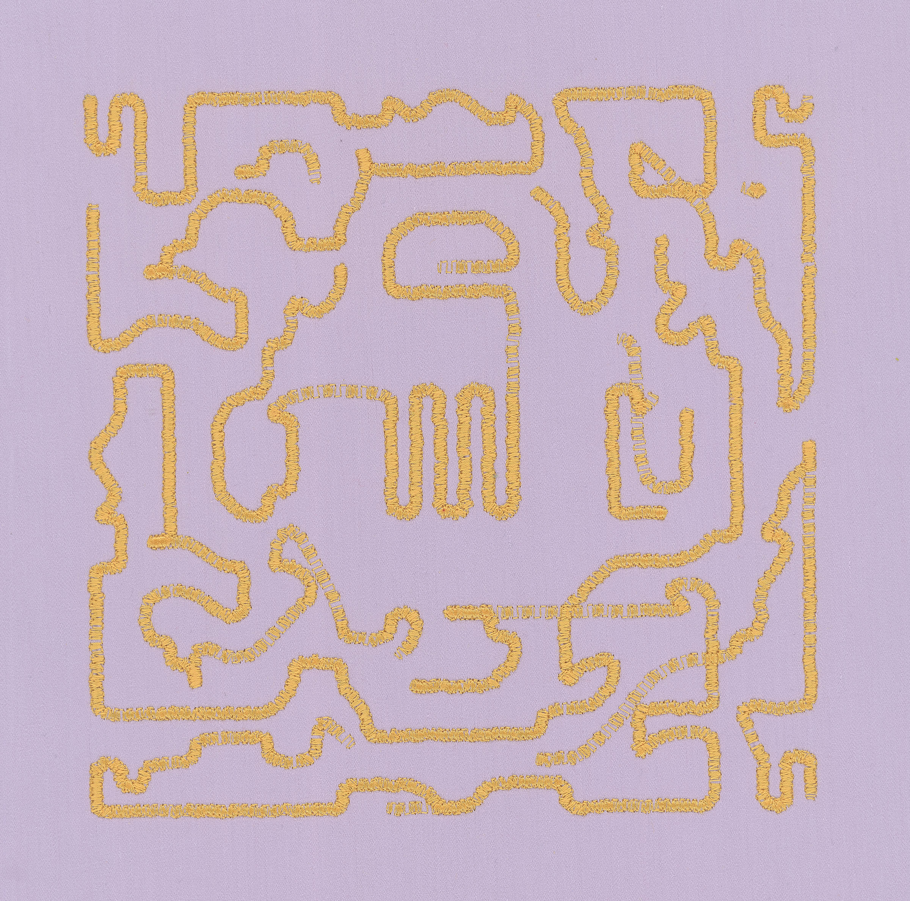
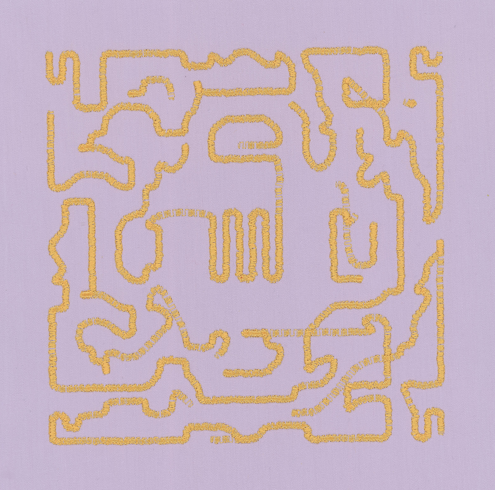

Oefenstof
2024 - 2025
52 NFTs + machine embroidery on cotton
20cm x 20cm
smart contract
Publication(s)
- What Do Computer Code and Needlework Have in Common?, The New York Times, June 2025
- "Code and Craft at Its Best", Objkt blog, July 2024
Exhibition(s)
- 2025 Oefenstof (solo exhibtion), Galerie Met, Berlin, Germany
- 2025 Interlaced: An Exhbition of Textile and Computational Art, The Painted Church, Cambridge, United Kingdom
- 2024 Responsive Dreams Festival, The Generative Art Museum, Barcelona, Spain
Oefenstof* is a collection of machine embroidery works created from a hand-coded algorithm that evolved over time.
Embroidery is one of the oldest decorative crafts, practiced since the invention of the needle and thread. At some point, embroidered realized they needed a way to record and reference different designs. The solution was the creation of the sampler, a piece of cloth decorated with different motifs. In Oefenstof, I examined the patterns and representations found in embroidery samplers, the act of recording embroidery work, and the transformation of traditional patterns through algorithmic processes.
Samplers often featured scattered motifs, bands of geometric and decorative borders, animals, floral motifs, and alphabets. Although found across different cultures and timelines, similarities can be found across samplers, often executed in the binary form of a cross-stitch. This duality, stitch or no stitch, resonates with the binary logic of computation. I explored this intersection by reinterpreting traditional embroidery motifs using computer algorithms.
I built my own library of embroidery samplers using custom code and an embroidery machine. Historically, embroidery samplers were not only tools for record-keeping but also served educational purposes and functioned as aptitude tests for young girls learning the craft. By automating both the pattern-making and execution of the embroidery, the process questions the role and value of craft in an era of rapid technological acceleration and the growing intimacy with our machines as collaborators.
In my experimentation, I applied well-known algorithms such as cellular automata and XOR patterns, yet their typical digital aesthetics are obscured by the constraints of the embroidery machine and the unpredictable dialogue between me and the computer. These limitations gave rise to new, labyrinth-like abstractions that emerge beneath the binary surface of the original patterns.
I released the project over approximately 4 months in 2024, with new pieces every Monday, Wednesday, and Friday, in total 52 works were released. Each (15 edition) NFT consists of a high-resolution scan of the embroidery work and a digital component. The embroidered works were exhibited at Galerie Met in Berlin, April of 2025.
Oefenstof 23, 24, 25, 26
Oefenstof 30
Oefenstof 56172

Installation view Galerie Met, Berlin

Installation view Galerie Met, Berlin

 



Selection of high resolution scans from series
*oefenstof translates from Dutch to “practice fabric” or “practice material” and is borrowed from the book Oefenstof by Joke Visser, a history of embroidery samplers from The Netherlands.